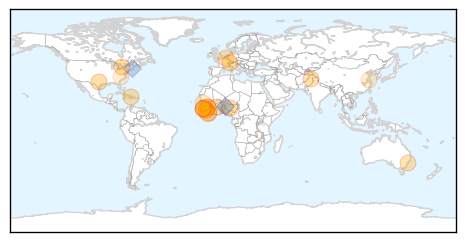

30 Day Trends
Web: 0 alerts, 0 warnings
Twitter: 2 alerts, 0 warnings
715 new deaths (9004 total)
1439 new cases (22525 total)
Top Articles:
- 1.000
- First Major Vaccine Trials In Liberia
- 0.999
- Guinea to expand use of experimental anti-Ebola drugs
- 0.999
- Ebola threatens economic gains in affected countries
- 0.997
- Dallas’ Ebola outbreak fed ‘epidemic of misunderstanding,’ SMU panel says
- 0.992
- Ebola Epidemic Takes a Toll on Sierra Leone's Surgeons
- 0.978
- Nearly 3,600 children orphaned by Ebola outbreak in West Africa - UNICEF -TRFN
- 0.963
- Sierra Leone: Interview: Senior UN relief official warns no room for complacency until Ebola is eliminated
- 0.951
- WHO updates clinical practices for Ebola treatment care
- 0.935
- Morristown doctor tells story of fighting Ebola
- 0.911
- Person in Dane County being monitored for possible Ebola symptoms
- 0.886
- West African Communities Receiving Ebola`s Orphans With Open Arms
- 0.878
- Bronte resident seeks funds for Ebola orphans
- 0.869
- Bronte resident seeks funds for Ebola orphans
- 0.854
- Guinea's Muslim clerics call for end to FGM to help stop Ebola - TRFN
- 0.836
- EU, African leaders to meet on Ebola March 3
- 0.711
- Hamile health post can’t handle suspected Ebola cases
- 0.660
- Inside The Fight To End Ebola
- 0.595
- China provides food aid to Ebola-hit Liberia - Headlines, features, photo and videos from ecns.cn
- 0.553
- Debunking vaccine junk science won't change people's minds. Here's what will.
- 0.531
- Mahama proposes cooperation against international crisis
- 0.519
- Acting Health Minister: Liberia stands to make global history if…
- 0.501
- President Sirleaf Meets Visiting AmeriCares President
Top Tweets:
- 0.916
- ebola isn't a chronic disease. It's an infection. People who contract it recover (system clears out virus) or die.
- 0.779
- 12 patients free of Ebola after receiving treatment run Ebola Treatment Unit (ETU) in Guineahttp://t.co/TgsAYs3Lxs
- 0.581
- Kenya @ Text ‘Stop Ebola’ to 7979 to donate 20 BOB to the war against Ebola. RT if you will. AfricaAgainstEbola
Web/News Articles

Tweets

Human Impact
Article Locations
Article Confidences